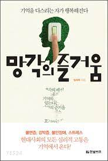

망각의 즐거움
기억을 다스리는 자가 행복해진다

책 소개
우리는 천재들의 기억력을 부러워한다. 정보가 쏟아지는 시대. 기억할 것이 넘쳐나는 요즘 같은 세상에는 많이 기억하는 자가 유리한 듯 보인다.
그리고 대부분 "망각"이란 우리가 소중히 여기는 뇌의 능력을 퇴보시키는 것으로 여긴다. 하지만
망각은 생존에 유리한 유전자를 선택하면서 인간에게 남아 있는 긍정적 능력이다. 망각은 스트레스로부터 우리를
보호하기 위해 생존에 유리한 경향으로 학습되고 유전되어 왔다. 지식과 마찬가지로 망각은 생존을 위해 유익할 뿐만 아니라
반드시 필요하다.